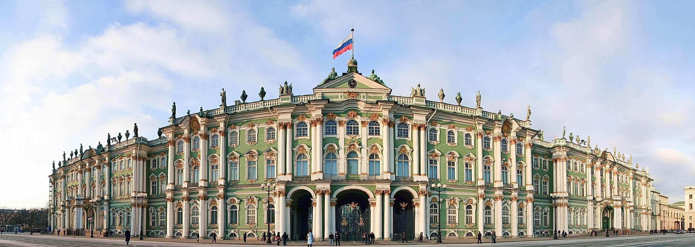
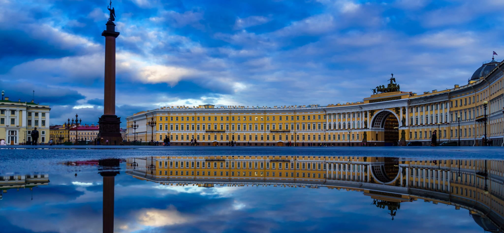

The Kremlin is the historic and political heart of Moscow, containing government buildings, ancient churches, and museums. Next to it, Red Square is home to the iconic Saint Basil’s Cathedral, famous for its colorful onion domes. This area is one of the most important symbols of Russian heritage and culture.

